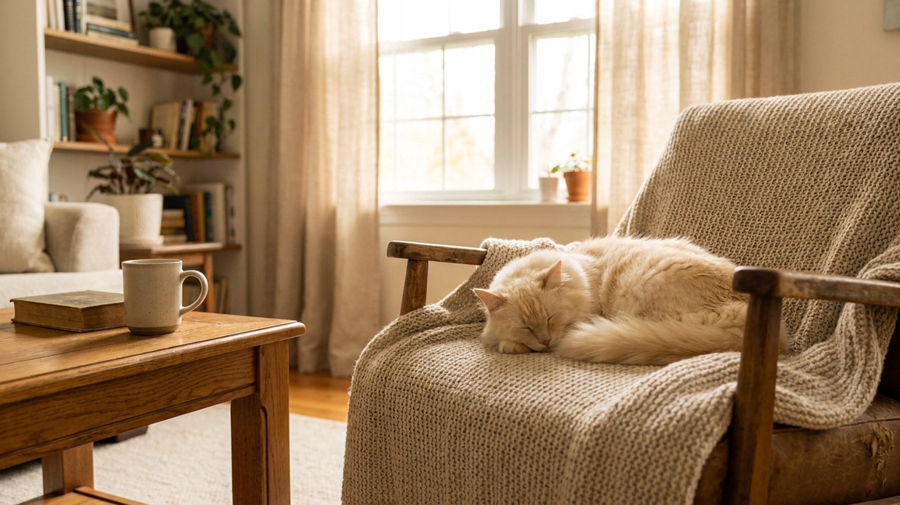

Дома борзая часами лежит на диване — тихая, спокойная, почти кошка. Стоит ей почуять движущийся объект на прогулке — и она уходит в погоню быстрее, чем вы успеете среагировать. Русская псовая борзая — порода контрастов, и понять это до того, как завести — важнее всего. Здесь — честно о характере, потребностях и о том, кому борзая подходит, а кому нет.
Русская псовая борзая — не гиперактивная порода. В квартире она ведёт себя спокойно, привязана к семье, не склонна к лаю и деструктивному поведению. Она держится с достоинством, не навязывается и очень чувствительна к тону голоса и настроению хозяина.
Но у борзой есть рефлекс, который нельзя отключить воспитанием: она создана преследовать. Кошка за забором, птица на газоне, велосипедист — любой быстрый объект включает инстинкт мгновенно. Борзая разгоняется до 50–60 км/ч за секунды. Вернуть её голосом в этот момент практически невозможно.
Можно — при одном условии: ежедневный выгул с возможностью полноценного спринта. Борзой не нужно часами бегать — ей нужна короткая, но настоящая нагрузка. 20–30 минут свободного галопа на огороженной территории несколько раз в неделю — это минимум. После хорошей пробежки она спокойно лежит весь день.
🐾 Ваш питомец — русская псовая борзая?
Заведите профиль в AnimaLife: приложение запомнит породу, возраст и вес и будет подсказывать по уходу именно для неё. Вопросы AI-ветеринару — круглосуточно и бесплатно.
Завести профиль → Завести в MAX →
У вас iPhone? AnimaLife есть в App Store
Русская псовая борзая не должна находиться без поводка в городе или в незнакомом незагороженном месте. Не потому что она злая или непослушная — а потому что охотничий инстинкт сильнее команды «ко мне». Борзая, ушедшая за добычей, не слышит хозяина. Это не дрессировочная проблема — это физиология породы.
Шелковистая длинная шерсть борзой выглядит роскошно, но требует регулярного внимания. Вычёсывание 2–3 раза в неделю, особенно в зонах трения (подмышки, за ушами, очёсы на хвосте). Борзая не переносит грубого обращения во время ухода — действуйте спокойно и последовательно.
Психика у породы тонкая: борзая запоминает неприятный опыт надолго. Крик, резкие движения, принуждение — всё это бьёт по доверию и трудно восстанавливается. Дрессировка работает только через положительное подкрепление, мягко и без давления.
🐾 У вас русская псовая борзая?
AnimaLife соберёт уход под породу: к каким болезням есть склонность, что проверять по возрасту, чем кормить и когда пора к врачу. Бесплатно, прямо в мессенджере.
Собрать план ухода → Собрать в MAX →
У вас iPhone? AnimaLife есть в App Store
🐾 Понравился разбор?
Подпишитесь на канал — каждый день разбираем по одному тревожному симптому у кошек и собак: что в пределах нормы, а когда пора к врачу. Подпишитесь, чтобы не пропустить разбор, который может спасти здоровье вашего питомца.
Честно о ситуациях, когда русская псовая борзая — не лучший выбор:
Материал носит информационный характер и не заменяет очную консультацию ветеринара.